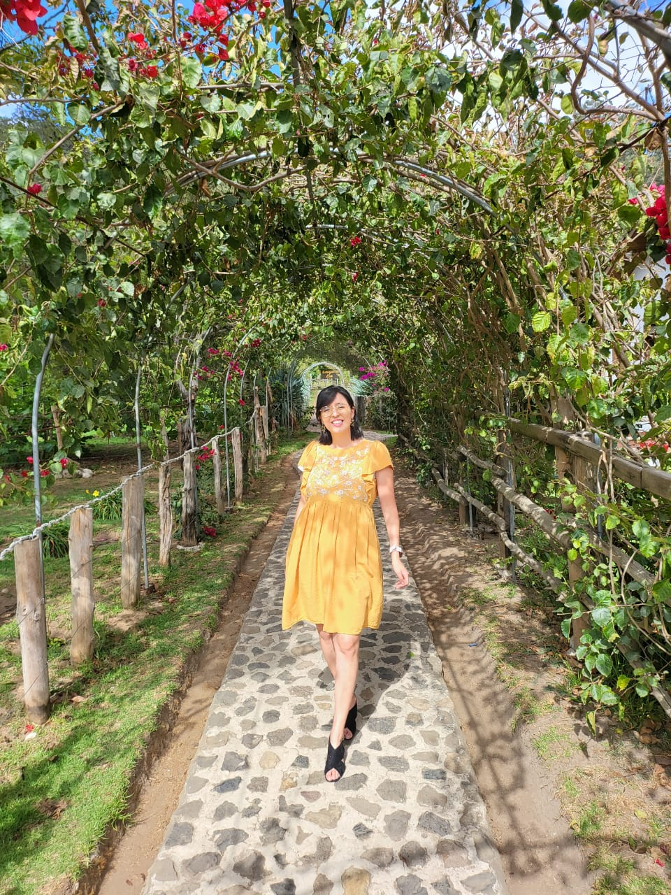
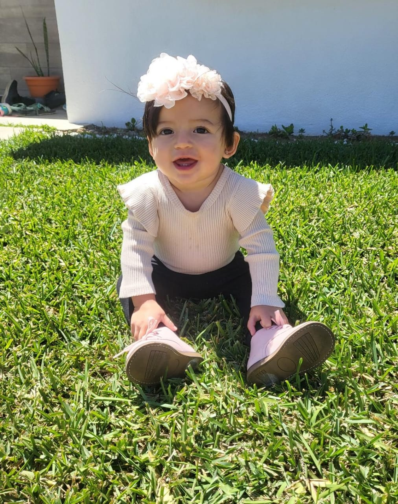
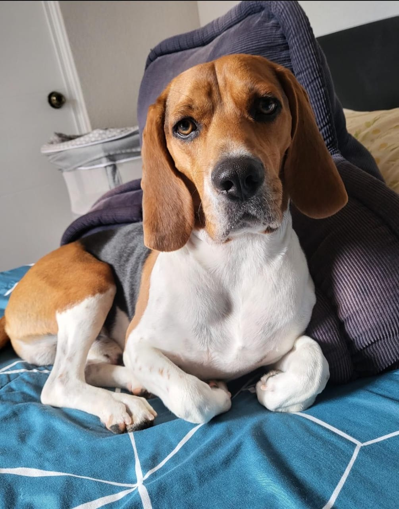
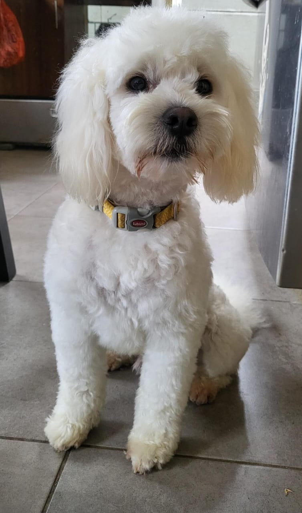

Mynor Alexander Aguirre Cante | WWD 130

About me
I am 30 years old, I am from Guatemala. I have been missionary for the church of Jesuschrist of later day saints in my own country, Guatemala, Quetzaltenango, that has made me love more my country, other of my hobbies are to cook, to draw, and to invent, one of my biggest dreams is have a big company of tecnological innovations that could helpt the people with common issues that they may have, also I have 4 years of marriage with my wife Andrea Orozco:

and I have 1 daughter, her name is Eloise and she is 1 year old:

also I have 2 dogs, the first one his name is Shazam:

and the other one his name is Ron:

and I am currently studying software developtment in BYU Idaho, and I am currently working as IT agent but I dream to work as a developer and inventor
What I will become in a nearly future
I will be working in a startUP company of software development and creting new programs to solve common issues.
My info